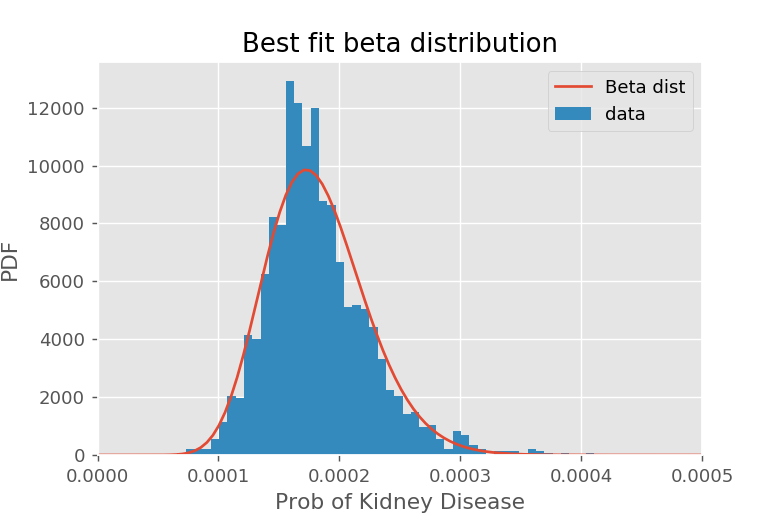

This post is part 4 of the "Empirical Bayes" series:
- Shrinkage and Empirical Bayes to improve inference
- Empirical Bayes with regression
- Derivations and Conjugate Priors (average ratings)
- Derivations and Conjugate Priors (proportions)
Derivations and Conjugate Priors (proportions)
The problem statement
We have some collection of binomial distributions, where each one is modeled as having a probability of success \(\pi_i\). For example, individual baseball hitters have a probability \(\pi_i\) of hitting the ball that depends on the particular batter \(i\). In the example investigated in this series, we looked at the kidney cancer rate on a per county basis. We are interested in using information about the population distribution of \(p_i\) to help us get better estimates of \(\pi_i\) than just the number of successes over number of failures for the experiment \(i\).
Introducing some notation, let \(s_i\) be the number of successes that experiment \(i\) has had, and \(f_i\) be the number of failures. In the baseball example, \(s_i\) would be the number of "hits" player \(i\) has had over his or her career, and \(f_i\) would be the number of misses. In the kidney cancer example, \(s_i\) would be the number of cases of kidney cancer found in county \(i\), and \(f_i\) would be the number of healthy people. The maximum likelihood estimate for \(\pi_i\) is
We will show, under some reasonable assumptions, that a better estimate can be found with
for appropriate choices of \(s_0\) and \(f_0\).
Bayes' theorem and conjugate priors
Our goal is to find the most likely value of \(\hat{p}_i\) given the number of successes \(s_i\) that we have seen, as well as our prior. That is, we are trying to maximize \(P(p_i | s_i)\). We are going to cheat a little, and assume \(N_i\) is fixed.
Using Bayes's theorem, we have
The likelihood is just the binomial distribution: if we know \(p_i\) and the total number of trials $N_i $, then
Now we have to decide on a prior. Following the discussion from the article on deriving the average rating, there is no single correct choice for the prior. We are going to start off with the beta-distribution, and show why it is a convenient distribution to use, and then finally come back to describe how to check if the beta distribution is appropriate.
The beta distribution
The beta distribution is described by two parameters, traditionally called \(\alpha\) and \(\beta\). Because it is confusing to use the parameter \(\beta\) while talking about the beta distribution, I will call these parameters \(s_0\) an \(f_0\) instead.
The PDF for the beta distribution is defined on the interval [0,1] by
where \(\Gamma(x)\) is the Gamma function. If \(s_0\) and \(f_0\) are integers, we can write this in a slightly simpler form:
For our purposes, we don't care too much about the factor out the front, as it simply normalizes the probability distribution. For our purposes, it is enough to know
The \(\beta\) distribution should look reasonably familiar. It looks like binomial distribution with probability \(\pi_i\), \((s_0 - 1) "successes" and $(f_0-1)\) "failures", but there are some important differences:
| Binomial | Beta |
|---|---|
| \(\pi_i\), \(N\) is fixed, and we look for probability of \(s\) successes | \(s_0, f_0\) are fixed, look for probability of \(\pi_i\) |
| Discrete outcomes | Continuous outcomes |
| \(s_i \in \{0, 1, ..., N\}\) | \(\pi_i \in [0, 1]\) |
Once the parameters \(s_0\) and \(f_0\) are given, we can give the expected value and variance of the beta distribution:
Back to Bayes theorem
Let's use the beta distribution for a prior on \(P(p_i)\) and see where that gets us. Using the number of failures \(f_i = N_i - s_i\), we have
Note this is the PDF for a beta distribution with parameters \(\tilde{s} = (s_i + s_0)\) and \(\tilde{f} = (f_i + f_0)\). That is, the a posteriori distribution \(P(\pi_i | s_i)\) is just a beta distribution with different parameters!
The expected value for the a posteriori distribution is
This has a really nice intuitive way of thinking about it: we pretend there are \(s_0\) "successes" and \(f_0\) "failures" that we consider part of the population and add to experimental results. As the number of trials become large, the imaginary part of the population (\(s_0 + f_0\)) becomes irrelevant, but for small populations where we don't trust the statistics, the imaginary population helps keep the value close to what we expect from our knowledge of the overall population.
Technically, this is not the maximum of the a posteriori distribution. We could find that by maximizing \(\ln P(\pi_i | s_i)\). The result is
I generally prefer to use the expected value instead, because the interpretation is a little simpler. Note that as in the rating case, we also have the variance of this distribution, so we can assign credible intervals as well as having the "point" estimates.
We will talk about how to find \(s_0\) and \(f_0\) after revisiting the idea of a conjugate prior.
What is a conjugate prior?
We introduced the notion of a conjugate prior when deriving the result for shrinking average ratings. It was a little tricky there, as all the distributions were Gaussian!
To recap, a prior conjugate to a particular likelihood is a family of priors that have the property that when we calculate the a posteriori distribution using this prior, we get a member of the same family (but typically with different parameters). In this case, the likelihood function was the binomial distribution. If we used a beta distribution with parameters \((s_0, f_0)\) as a prior, then the a posteriori distribution is also a beta distribution with parameters \((s_0 + s_i, f_0 + f_i)\). The reason this is a desirable property is that future experiments would start with our current a posteriori distribution as their prior! That is, a new experiment with \((S,F)\) successes and failures would produce an a posteriori distribution with parameters \((s_0 + s_i + S, f_0 + s_i + F)\)!
That is, the beta distribution is a conjugate prior to the binomial distribution/binomial likelihood.
Finding the parameters \(s_0\), \(f_0\) of the beta distribution
Ultimately, our goal is to make predictions that resemble reality, not to make things convenient for mathematicians. Again, we face the problem of having to justify the prior, which Bayesian statistics gives us no tool for doing: the prior is something you have to produce in order for Bayesian statistics to work with and update. The idea of abandoning empiricism and picking a prior based on mathematical convenience becomes seductively appealing....
Instead of abandoning empiricism, we are going to embrace it. The philosophy of empirical Bayes is to allow the measured population values inform your choice of prior. We start by considering the distribution of all the different measured proportions \(p_i = s_i/f_i\), and choose \(s_0\) and \(f_0\) to best fit this distribution.
One way of doing this is measuring the mean \(\Pi\) and variance \(V\) of the distribution of \(p_i\). We can invert our earlier formula for the mean and variance of the beta distribution in terms of \(s_0\) and \(f_0\) to instead get \(s_0\) and \(f_0\) from the mean and variance. This is called the method of moments. The formula obtained this way are relatively simple.
Another approach is take a numpy array p containing all the \(p_i\) values, and use the built-in beta.fit(p). This returns four values, the first two of which are the best fit (in the least mean squares sense) for \(s_0\) and \(f_0\).
These are procedures for finding the best-fit values for \(s_0\) and \(f_0\). How can you tell if they are any good? Ultimately you will want to compare the generated beta distribution to the actual distribution of \(p_i\). In the kidney cancer example, we saw reasonable (but not great) agreement: 
We can see a small bump around \(p_i = 0.00023\) which suggests we may actually have a mixture of beat distributions. It is up to you whether you think this prior is appropriate, or whether you should use a better one.
Remember that empirical Bayes doesn't require use of the conjugate prior -- that just allows our results to be written in the nice, compact form. If we wanted to use a prior that was a mixture of different beta distributions (for example), we could do so, but determining the a posteriori distribution will now generally be a lot more involved.
Summary
The definition of the beta distribution, with the \(s_0 - 1\) and \(f_0 - 1\) in the powers, leads to a few inconveniences (ultimately these can be traced back to the weird definition of the Gamma function in mathematics).
- Empirical Bayes uses the global distribution of parameters to adjust raw averages.
- It is convenient to assume the prior distribution for proportions is given by a beta distribution with parameters \(s_0\) and \(f_0\) given by
$$s_0 = \Pi\left(\frac{\Pi(1-\Pi)}{V} - 1\right), \quad\quad\quad f_0 = (1-\Pi)\left(\frac{\Pi(1-\Pi)}{V} - 1\right)$$where \(\Pi\) is the average proportion over all groups, and \(V\) is a the variance over all groups. You can also use the built in
beta.fitmethod to estimate the parameters \(s_0\) and \(f_0\) (it gives a slightly different estimate, and is not equivalent to the method above). The results for \(s_0\) and \(f_0\) are generally similar between methods. - We can "shrink" or "regress" the raw proportions \({p}_i = s_i/(s_i + f_i)\) for group \(i\) to the expected value for \(\pi_i\):
$$E(\pi_i) = \frac{s_i + s_0}{(s_i + s_0) + (f_i + f_0)}$$This can be interpreted as having \(s_0\) fake "successes" and \(f_0\) fake "failures" that get added to every groups totals to represent the prior knowledge of the population.
- You can also "shrink" or "regress" the raw proportions \({p}_i = s_i/(s_i + f_i)\) for group \(i\) to the most likely valuefor \(\pi_i\):
$$\hat{p}_i = \frac{s_i + (s_0 - 1)}{(s_i + s_0-1) + (f_i + f_0-1)}$$This can be interpreted as having \((s_0 - 1)\) fake "successes" and \((f_0 - 1)\) fake "failures" to represent the population. Usually I use the expected value formula, because it is a nuisance to keep track of all the "off by one" terms.
- The standard error \(S_i\) in the estimates for \(\pi_i\) are given by \(\hat{\theta}_i\) can be found from the formula for the variance in the beta distribution:
$$S_i^2 = \frac{E(\pi_i)(1-E(\pi_i))}{s_0 + s_i + f_0 + f_i + 1}$$